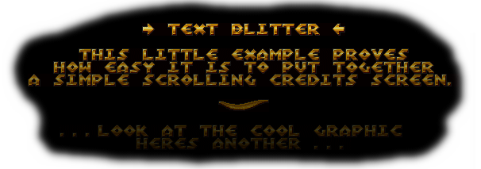

Animation introduction
None
Marquee
Sin Wave
Sin/Cos/Tan Scroller
The Text Blitter includes special animation sets that allow you to quickly and easily bring your text to life.
The Extension contains 16 internal parameters which are used for both animation options and saving temporary animation information. Because the extension gives you the ability to alter the parameter information you can alter how the animation plays or take full control over the different parameters.
Because each animation is displayed differently, each uses the parameters in different ways. Below explains what each animation does and the parameters used.
The parameter 0, is used for options throughout the animation settings. Currently it is only used for the fade effect on the marquee, but will be used for future animations
When no animation is selected, the extension will display the text using the alignment information. No parameters are taken into account
The marquee animation is one of the most powerful animations within the extension. It gives you the ability to manually or automatically scroll the text (can be multilined) around the object.
In the animation setup dialog, when Marquee is selected you will find an option labeled Vertical Edge Fade which fades the text in and out as it leaves and enters the object when scrolled. The object will fade text as it is scrolled up or down. The speed of the fade is determined by the gap between the margin and the edge of the object.
Note, this option only affects text on the vertical axis.
When the option is enabled, the area outside the margin is used to fade the text. All text that appears inside the margin will appear as normal (unless a transparency value is set in the ink effects dialog). When Vertical Edge Fade is enabled all other ink effects are disabled
0: Fade effect option - 0x000001 (1 - on, 0 - off)
1: X Speed
2: Y Speed
3: X Offset - Override this value to change the x position in the scroll
4: Y Offset - Override this value to change the y position in the scroll
The Sin Wave animation waves up and down as parameter 5 is changed. The position of the text is not changed
1: Sin wave frequency
2: Sin wave amplitude (height)
3: Reserved, do not change
4: Reserved, do not change
5: X Offset - Override this value to change the value of the wave
These animations scroll the text along the specific graph of either sin, cos or tan. All 3 animations use the same parameters and work in exactly the same way
1: X Scroll Speed
2: Sin wave frequency
3: Sin wave amplitude (height)
4: Reserved, do not change
5: X Offset - Override this value to change the x position in the scroll
When setting up the animations it is best to play around with the different parameters until you feel comfortable with the result. Included in the examples is a special animation demo which includes all the features to play with the parameters in real-time and see the result.
The extension has been developed to allow near infinite amount of different animation types so you can expect new animations to appear in later versions of Text Blitter
Content and Design are Copyright (c) 2001-2002 Christopher Lightfoot. All rights reserved.